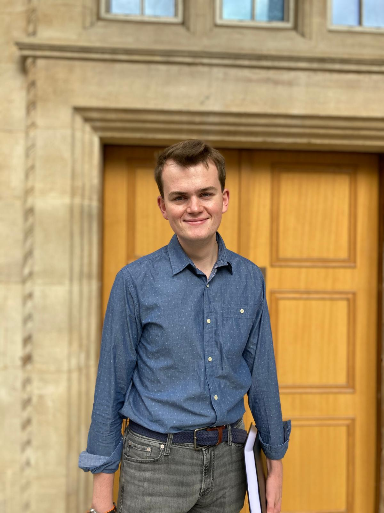

<!DOCTYPE html>
<html lang="en">
<head>
    <meta charset="UTF-8">
    <meta name="viewport" content="width=device-width, initial-scale=1.0">
    <title>About</title>
    <link rel="stylesheet" href="style.css">
    <link rel="apple-touch-icon" sizes="180x180" href="/apple-touch-icon.png">
    <link rel="icon" type="image/png" sizes="32x32" href="/favicon-32x32.png">
    <link rel="icon" type="image/png" sizes="16x16" href="/favicon-16x16.png">
    <link rel="manifest" href="/site.webmanifest">
    <style>
        .image-left {
            float: left;
            margin-right: 15px;
        }
    style>
</head>
<body>
    <header>
        <div class="container">
            <h1>Euan N. Bassey</h1>
            <p>Post-Doc in Magnetic Resonance & Materials Chemistry</p>
        </div>
    </header>

    <!-- Navigation Section -->
    <nav>
        <div class="container">
            <ul>
                <li><a href="index.html">home</a></li>
                <li><a href="about.html">about</a></li>
                <li><a href="cv.html">cv</a></li>
                <li><a href="publications.html">publications</a></li>
                <li><a href="news.html">news</a></li>
                <li><a href="contact.html">contact</a></li>
            </ul>
        </div>
    </nav>

    <!-- About Section -->
    <section id="about">
        <div class="container">
            <h2>About Me</h2>
            
            <p style="text-align:justify;">I am currently a Post-Doctoral Researcher at the University of California, Santa Barbara, and will be moving to the Centre de Résonance Magnétique Nucléaire à Très Hauts Champs in February/March 2025. I’m from Cornwall, the extreme western tip of the UK; a location similar to California. Except the temperatures. And the rainfall. And the windspeed and direction. And the culture. Oh, and the heritage. Otherwise identical. Having spent the last eight years at the University of Cambridge, I have relocated to Santa Barbara to practice driving on the other side of the road (something frowned upon in the UK) and, more importantly, to experience the vibrant and exciting research atmosphere on which the University (and I) thrive. I enjoy cooking and am also a second Dan black belt in Karate, something I feel may come in handy as I try to negotiate through the US banking, housing and social security networks. I believe bail is currently $1000. Please visit my crowdfunding webpage if you want to help out.</p>
            <p style="text-align:justify;">Novel lithium- and sodium-ion battery materials capable of high charge-discharge rates and storing large quantities of energy are increasingly of interest to modern society for use in devices, transportation and grid-based energy storage. Probing the electronic and magnetic structures of these materials provides a handle on their ability to fulfil the aforementioned properties; doing so in a non-invasive, even operando, manner is particularly important to obtain an accurate picture of their structures and properties. My current research focuses on the characterisation of both lithium- and sodium-ion battery materials both experimentally—through electron paramagnetic resonance (EPR) spectroscopy, nuclear magnetic resonance (NMR) spectroscopy and magnetometry—and theoretically—using hybrid density functional theory (DFT) and cluster expansion methodologies—to understand the electronic and magnetic structures of these materials. If it’s paramagnetic, metallic and/or can be probed with EPR, NMR and DFT, I’m interested. You can also find me on BlueSky (<a href="https://bsky-staging-web.b-cdn.net/profile/euannbassey.bsky.social">@euannbassey.bsky.social</a>) and Github (<a href="https://github.com/EuanNBassey">EuanNBassey</a>).</p>
            <p style="text-align:justify;"> </p>
            <p>I'm always interested in new collaborations and projects, so if you think you'd like to work with me, please get in touch! </p>
        </div>
    </section>

    <footer>
        <div class="container">
            <p>&copy; 2025 Euan Bassey. All rights reserved.</p>
        </div>
    </footer>
</body>
</html>
